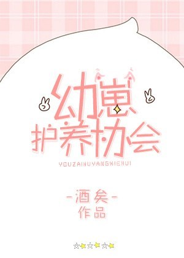

Xie Luan siempre había creído en la ciencia hasta que un día, un meteorito se estrelló en su jardín, lo que lo obligó a seguir un guión heroico para salvar el mundo. Lo peor fue que el guión ni siquiera seguía el sentido común.
Otros se convierten en superhéroes mientras él se convierte en superaniñera. Entonces, en su mano izquierda tenía una “Enciclopedia de cachorros” y en la derecha, una pequeña botella de leche para alimentar al pequeño cachorro que colgaba de su pierna.
Hoy, Xie Luan está haciendo todo lo posible para salvar el mundo.